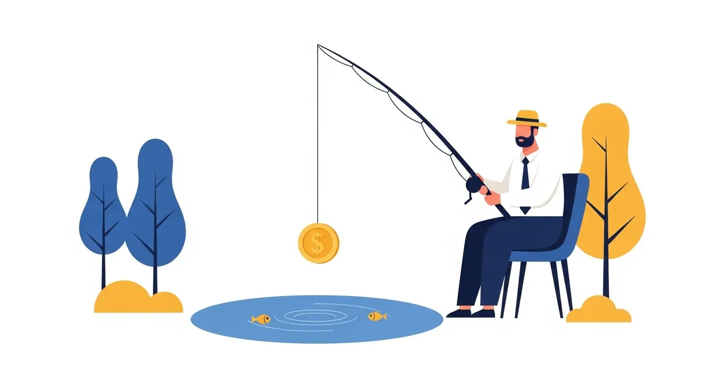

建設業界の経営者様や採用担当者様とお話ししていると、ある共通の「悲鳴」に近いお悩みをお聞きします。
「求人サイトに年間120万円も払ったのに、1年間で来た応募はたったの2件だった…」
これは決して大げさな話ではなく、ごく最近、私たちが実際にご相談を受けた地方の建設会社様（従業員40数名規模）のリアルな実例です。なぜ、立派なホームページがあっても、高いお金を払って募集をかけても人が来ないのか？
今回は、2026年現在の「建設業における採用の最新トレンド」を交えながら、「求人サイトにお金を払えば人が来る時代の終焉」と、「これから企業が取るべき採用戦略（単なる採用ページではない、強力な受け皿の重要性）」について解説します。
1. なぜ「120万円で2件」という悲劇が起きるのか？
かつては「マイナビ」や「リクナビ」、あるいは大手求人誌に掲載さえすれば、一定の母集団（応募者）が形成できていました。しかし今、中小規模の建設会社が求人サイト内で勝負をすることは、「竹槍で最新鋭の戦車に挑む」のに等しい状態になっています。
その最大の理由は「大企業との絶対的な比較」です。
2024年の働き方改革以降、大手ゼネコンをはじめとする大企業は空前の「初任給引き上げ」と「待遇改善」競争を行っています。求人サイトという【同じ土俵】に並べられたとき、求職者は必ず「給与・休日・福利厚生」といったテキストの条件面で比較を行います。中小企業がいくら「やりがい」や「職場の温かさ」を文章でアピールしても、資金力とブランド力を持つ大手の条件には検索機能の時点で弾かれ、求職者の目にすら留まらない（＝埋もれる）という構造が完全に出来上がってしまっているのです。
2. スマホ世代は「文字（条件）」ではなく「視覚（リアル）」を信じる
さらに致命的なのが、求職者の「情報収集能力の高度化」です。
今の20代〜30代の若手人材は、求人サイトの「募集要項（テキスト）」だけを見て応募ボタンを押すことは絶対にありません。彼らが求人票で条件面を見た後、必ず取る行動があります。それは「Google検索」や「SNS検索」です。
会社名で検索し、
- 「どんな人たちが働いているのか？（顔が見えるか）」
- 「現場はどんな雰囲気か？（写真や動画があるか）」
- 「アットホーム、と書いてあるが本当か？」
といった「現場の一次情報（リアル）」を必死に探しに行きます。
求人サイトの定型フォーマットでは、この「視覚的な安心感」や「自社の本当の空気感」は絶対に伝えきれません。検索した結果、受け皿となる「自社サイト」や「リクルートページ」がどれほど立派なデザインであったとしても、そこに『求職者が一番知りたい泥臭くもリアルな現場の声（一次情報）』が欠けていれば、求職者は強烈な不安を覚え、「自分には合わなそうだな」とそのまま離脱（辞退）してしまうのです。
これが「120万払ったのに応募が来ない」最大の要因、『立派なサイトはあるのに、底に穴が開いているバケツ状態』の正体です。
3. 「掛け捨て型消費」から「採用資産化」へのシフト
では、これから中小の建設会社が優秀な人材を確保するためにはどうすればいいのでしょうか？答えは非常にシンプルです。
「求人サイト（外部媒体）への依存度を下げ、自社の魅力を直接100%伝えきれる『採用特設サイト（LP）』を持つこと」です。
賢い建設会社はすでに、求人サイトへの高額な課金をやめ、自社の採用特設ページ（LP）の構築に投資をシフトさせています。理由は以下の3点です。
① 比較されない「独自の土俵」を作れる
自社LPであれば、大手の給与額と横並びで比較されることはありません。社長の熱い想い、現場の泥臭くもかっこいい写真、先輩社員のリアルなインタビュー動画など、「自社にしかない独自の魅力（カルチャー）」を自由に表現でき、それに共感する人材をピンポイントで一本釣りできます。
② 費用が「掛け捨て」にならない（資産化）
求人サイトの最大のデメリットは「掲載期間が終わればページが消滅し、またゼロから費用を払わなければならない」という”掛け捨て型”の消費モデルであることです。しかし自社採用LPは、一度作ってしまえば24時間365日、文句も言わずに自社の魅力を発信し続けてくれる優秀な「Web上のトップ営業マン（自社資産）」として半永久的に手元に残ります。
③ ゆくゆくは「SNS広告×自社LP」の最強コンボへ
しっかりとした受け皿（採用LP）が完成すれば、ゆくゆくは少額の「SNS広告（Instagram広告など）」を回すだけで、自社に興味がある層だけをLPに集客し、そのまま応募へと繋げる「採用の自動化ルート」を構築することも可能になります。
まとめ：まずは「穴のあいたバケツ」を塞ぐことから
年間120万払って応募が2件。この数字は、決してその会社に魅力がないわけではありません。「戦う場所（求人サイト）」と「見せ方（受け皿の欠如）」を間違えていただけなのです。
「いくら求人をかけても人が来ない」とお悩みであれば、新しい媒体や広告を契約する前に、今の採用ページを今一度ご確認ください。
「自社の情報が正しく伝わっているか？」そして何より、「求職者が本当に知りたいリアルな情報（職場の泥臭さや本音）を載せきれているか？」
企業側の『言いたいこと』だけを並べたページではなく、求職者の『知りたいこと（不安の解消）』に応える強力な受け皿（採用LP）を作って穴のあいたバケツを塞ぐこと。それが、今の時代を生き抜く採用戦略の第一歩です。
自社の採用ページ、今のままで大丈夫か気になりませんか？
「Webとしくみをつくる」では、建設業に特化した『無料の採用ページ診断』を行っています。
「なぜ人が来ないのか？」その原因と具体的な改善策をご提案します。